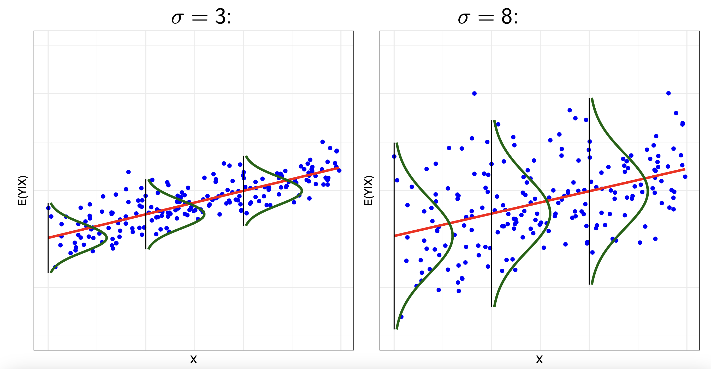
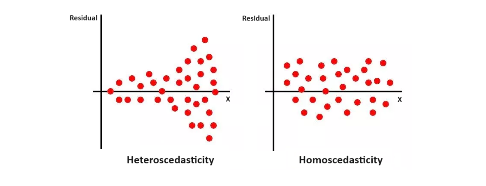

library(tidyverse)
library(fixest)
library(texreg)In this chapter, we build on the last chapter and introduce the multiple linear regression model, and how it can be a useful tool to address the impact of confounding variables.
Topics: Multiple Linear Regression, OLS Estimator, Standard Errors and Hypothesis Testing, R-Squared and F-tests.
4.1: The Multiple Linear Regression Model
Let us refresh on the goals of econometrics in order to find a causal effect between x and y:
Definition: Goal of Econometrics
Our goal in econometrics is as follows:
- Find the correlation between x and y.
- Then, remove the effect of confounders w from our correlation.
- Then, remove the effect of y causing x (reverse causality) from our correlation.
Then, we are left with the causal effect of x \rightarrow y.
In the last chapter, we discussed simple linear regression, which addresses the correlation part between x and y.
- But we know from above, that correlation is not enough to find a causal effect.
In this chapter, we cover the second goal: removing the effect of confounders.
- This chapter will not discuss causal inference. This chapter (and the next) only discusses multiple linear regression as a possible way to control for confounding variables.
- We will return to causal inference in Chapter 6.
Multiple linear regression is an extension of simple linear regression, that can help us deal with confounding variables.
- Multiple linear regression allows us to “control for the effect” of confounders. We will discuss a little about this in section 4.5, and much more in depth in chapter 6.
The response variable (outcome variable) is notated y, just like in single linear regression.
The explanatory variables are x_1, x_2, ..., x_k. We sometimes also denote all explanatory variables as the vector \overrightarrow{x}.
- Our treatment variable of interest D or x is considered one of the explanatory variables \overrightarrow{x} (most often x_1).
- The other explanatory variables x_2, ..., x_k are confounding variables that we have chosen to include in the model.
A linear regression model is the specification of the conditional distribution of Y, given \overrightarrow{x}. The linear regression model focuses on the expected value of the conditional distribution, notated \mathbb{E}[y_i|\overrightarrow{x}_i].
Definition: Multiple Linear Regression Model
Take a set of observed data with n number of pairs of (\overrightarrow{x}_i, y_i) observations. The linear model takes the following form:
\mathbb{E}[y_i|\overrightarrow{x}_i] = \beta_0 + \beta_1 x_{1i} + ... + \beta_k x_{ki}
- Where the coefficients (that need to be estimated) are vector\overrightarrow{\beta} = \beta_0, \beta_1, ..., \beta_k.
We can also write the linear model for the value of any point y_i in our data:
y_i = \beta_0 + \beta_1x_{1i} + ... + \beta_k x_{ki} + u_i
- Where u_i is the error term function - that determines the error for each unit i. Error u_i has a variance of \sigma^2, and expectation \mathbb{E}[u_i] = 0.
4.2: Multiple Linear Regression with Linear Algebra
We can also represent the multiple linear regression model in linear algebra. Let us start with the linear model:
y_i = \beta_0 + \beta_1x_{1i} + \beta_2x_{2i} + ... + \beta_k x_{ki} + u_i
The i’th observation can be re-written in vector form as following:
y_i = x_i'\beta + u_i, \text{ where }\beta = \begin{bmatrix}\beta_0 \\ \beta_1 \\ \vdots \\ \beta_k\end{bmatrix} \text{ and }x_i = \begin{bmatrix}1 \\x_{1i} \\\vdots \\x_{ki}\end{bmatrix}
- The x_i' in the equation is the transpose of x_i, to make matrix multiplication possible.
- The first element of the x_i matrix is 1, since 1 \times \beta_0 gives us the first parameter (intercept) in the linear model.
- Thus, when multiplying out, we get the same equation as the original multiple linear regression.
Since our data has n number of observations i, we can express this into vector form, with the x_i' and \beta being vectors within a vector.
\begin{split} \begin{pmatrix}y_1 \\ y_2 \\ \vdots \\ y_n\end{pmatrix} & = \begin{pmatrix}x_1'\beta + u_1 \\ x_2'\beta + u_2 \\ \vdots \\ x_n'\beta + u_n\end{pmatrix} \\ & \\ & = \begin{pmatrix}x_1'\beta \\ x_2'\beta \\ \vdots \\ x_n'\beta\end{pmatrix} + \begin{pmatrix}u_1 \\ u_2 \\ \vdots \\ u_n\end{pmatrix} \end{split}
Since \beta vector appears as a common factor for all observations i=1,...,n, we can factor it out and have an equation:
\begin{pmatrix}y_1 \\ y_2 \\ \vdots \\ y_n\end{pmatrix} = \begin{pmatrix}x_1' \\ x_2' \\ \vdots \\ x_n'\end{pmatrix} \space \beta + \begin{pmatrix}u_1 \\ u_2 \\ \vdots \\ u_n\end{pmatrix}
We can expand the x_1',...,x_n' vector into a matrix. Remember that each x_1',...,x_n' is already a vector of different explanatory variables. So, we get the following result:
Definition: Multiple Linear Regression with Linear Algebra
The multiple linear regression can be expressed in linear algebra as:
y = X \beta + u, \text{ where } X = \begin{bmatrix}1 & x_{21} & \dots & x_{k1} \\1 & x_{22} & \dots & x_{k2} \\\vdots & \vdots & \vdots & \vdots \\1 & x_{2n} & \dots & x_{kn}\end{bmatrix}
- Where the notation for elements of X is x_{ki}, with i being the unit of observation i = 1, \dots n, and k being the explanatory variables index.
- Where y and u are n \times 1 vectors (as seen above), and \beta is a k \times 1 vector.
- The first column of X is a vector of 1, which exists because these 1’s are multiplied with \beta_0 in our model.
The point of expressing the model in linear algebra is that it makes the estimation process far easier, as we will see in the next section.
4.3: Ordinary Least Squares Estimator for Multiple Regression
As we remember from Chapter 1, the goal of Ordinary Least Squares Estimation is to minimise the sum of squared errors. The sum of squared errors in multiple regression is:
\begin{split} SSE & = \sum\limits_{i=1}^n (y_i - \hat y_i)^2\\ & = \sum\limits_{i=1}^n (y_i - \hat{\beta}_0 - \hat{\beta}_1x_{1i} - \hat{\beta}_2x_{2i} - ... - \hat\beta_kx_{ki})^2 \end{split}
Similar to our simple linear regression (but with additional variables), our minimisation condition is:
\begin{split} (\hat{\beta}_0, \hat{\beta}_1, \hat{\beta}_2, ...) & = \arg \min\limits_{(\hat{\beta}_0, \hat{\beta}_1, \hat{\beta}_2, ...)} (y_i - \hat{\beta}_0 - \hat{\beta}_1x_{1i} - \hat{\beta}_2x_{2i} ...)^2 \\ & = \arg \min\limits_{(\hat{\beta}_0, \hat{\beta}_1, \hat{\beta}_2, ...)} S(\hat{\beta}_0, \hat{\beta}_1, \hat{\beta}_2, ...) \end{split}
Taking the partial derivatives of each parameter like in simple linear regression, we get first order conditions:
\begin{split}& \sum\limits_{i=1}^n (y_i - \hat{\beta}_0 - \hat{\beta}_1x_{1i} - \hat{\beta}_2x_{2i}...) = 0 \\& \sum\limits_{i=1}^n X_{1i}(y_i - \hat{\beta}_0 - \hat{\beta}_1x_{1i} - \hat{\beta}_2x_{2i}...) = 0 \\ & \sum\limits_{i=1}^n X_{2i} (y_i - \hat{\beta}_0 - \hat{\beta}_1x_{1i} - \hat{\beta}_2x_{2i}...) = 0 \end{split}
- and so on for x_{3i}, ..., x_{ki}.
This system of equations includes k+1 variables and k+1 equations, which is way too difficult to solve.
Instead, we can use linear algebra. Let us define our estimation vector \hat{\beta} as the value of \hat\beta that minimises the sum of squared errors:
\hat{\beta} = \arg \min\limits_{b} (y - Xb)' (y - Xb) = \arg \min\limits_b S(b)
We can expand S(b) as follows:
\begin{split} S(b) & = y'y - b'X'y - y'Xb + b'X'Xb \\ & = y'y - 2b'X'y + b'X'Xb \end{split}
Taking the partial derivative in respect to b:
\frac{\partial S(b)}{\partial b} = \begin{pmatrix}\frac{\partial S(b)}{\partial b_1} \\\vdots \\\frac{\partial S(b)}{\partial b_k}\end{pmatrix}
Differentiating with the vector b yields:
\frac{\partial S(b)}{\partial b} = -2X'y + 2X'Xb
Evaluted at \hat{\beta}, the derivatives should equal zero (since first order condition of finding minimums):
\frac{\partial S(b)}{\partial b} \biggr|_{\hat{\beta}} = -2X'y + 2X'X \hat{\beta} = 0
When assuming X'X is invertable, we can isolate \hat{\beta} to find the solution to OLS:
Definition: OLS Estimate of \hat\beta
The Ordinary Least Squares Estimate of vector \hat\beta for multiple linear regression is:
\hat{\beta} = (X'X)^{-1} X'y
Once we have estimates of \hat{\beta}, we can plug them into our linear model to obtain fitted values:
\hat{y} = X\hat{\beta} = X(X'X)^{-1} X'y
4.4: Interpretation of Coefficients in Multiple Linear Regression
In section 3.6, we discussed the interpretation of coefficients \beta_0 and \beta_1 in the simple linear regression. Things slightly change for multiple linear regression.
Interpretation of \hat\beta_0
The interpretation of \hat\beta_0 still remains very similar - it is the expected value of y when all explanatory variables \overrightarrow{x} = 0.
We can prove this mathematically:
\begin{split} \hat y_{i, \ \overrightarrow x_i = 0} & = \hat\beta_0 + \hat\beta_1 x_{1i} + ...+\beta_k x_{ki} \\ & = \hat\beta_0 + \hat\beta_1(0) + ... + \beta_k (0) \\ & = \hat\beta_0 \end{split}
Interpretation of \hat\beta_0
When all explanatory variables equal 0, the expected value of y is \hat\beta_0.
- Note: For the linear probability model, \hat\beta_0 is the expected probability of category y=1 instead when all explanatory variables equal 0 (section 3.7).
Interpretation of \hat\beta_j
Let us define \hat\beta_j as any coefficient in \hat\beta_1, ..., \hat\beta_k, which is multiplied to any variable x_j in x_1, ..., x_k.
- Or in other words, \hat\beta_j is any coefficient multiplied to any explanatory variable x_j.
How do we interpret this? We might remember from section 3.6 that these coefficients are the slope. But how do the additional explanatory variables change this?
In multiple linear regression, \hat\beta_j is simply the expected change in y given a one unit increase in x_j, holding all other variables constant.
Why is this the case? Let us show this mathematically - the change in y given a one unit increase in x_j should be the partial derivative of the regression function in respect to x_j:
\begin{split} \hat y_i & = \hat\beta_0 + \hat\beta_1 x_{1i} + ... + \hat\beta_j x_{ji} + ... + \hat\beta_k x_{ki} \\ \frac{\partial \hat y_i }{\partial x_{ji}} & = \frac{\partial}{\partial x_{ji}}[\hat\beta_0 + \hat\beta_1 x_{1i} + ... + \hat\beta_j x_{ji} + ... + \hat\beta_k x_{ki}] \\ & = 0 + 0 + ... + \hat\beta_j + ... + 0 \\ & = \hat\beta_j \end{split}
With a partial derivative, we are acting as if the other x_1, ... x_k not x_j are constant. So, we essentially are holding them constant.
- This allows us to “control” for confounders - as our \beta_j is the relationship between x_j and y when these confounders are held constant - i.e. the relationship between x_j and y at every different level of the confounders.
- More intuitively - let us say x_j is education, y is income, and our confounder is x_2 age. \hat\beta_j would be the relationship between education and income, holding constant age. That basically means, if we consider only 25 year olds, what is the relationship between education and income. What about 26 year olds. We hare holding them constant.
- We will discuss this in far more detail in chapter 6.
Interpretation of \hat\beta_j
When x_j increases by one unit, there is an expected \hat\beta_j increase in y, holding all other explanatory variables constant.
Note: for binary explanatory variables, \hat\beta_j is the expected difference in y between categories x_j =1 and x_j = 0 (section 3.6).
Note: for the linear probability model, when x_j increases by one unit, there is an expected \hat\beta_j increase in the probability of category y=1 (section 3.7).
Warning!
Remember, this is the relationship between x and y, not the causal effect.
We can do the same interpretation in terms of standard deviations as shown in section 3.6.
4.5: Model Summary Statistics
Estimated Residual Standard Deviations
We can derive the estimate of the residual variance \sigma^2 with this formula:
\begin{split} \hat{\sigma}^2 & = \frac{\sum(y_i - \hat{y}_i)^2}{n-k-1} \\ & = \frac{SSE}{df} \end{split}
- Where SSE is the sum of squared errors (that we used in the OLS estimator)
- Where df is the degrees of freedom (by definition in regression, number of observations minus number of variables minus 1).
But what is the residual variance? Recall our regression model: y_i = \beta_0 + \beta_1x_{1i} + ... + \beta_k x_{ki} + u_i
Our estimate of the residual variance \hat{\sigma}^2 is our estimate of the variance of the error term \epsilon_i’s variance. More intuitively, it explains how spread out observed values of y are from our prediction value \hat{y} = \mathbb E(y|x).
The figure below better showcases this in 2 different models. The red lines are our predicted regression line, and the green lines represent the distribution of our error term u_i:

The residual standard deviation \hat{\sigma} (square root of variance) is consistent throughout a model. This is one of the assumptions of the linear regression model - that errors are consistently distributed, no matter the value of x. This assumption is called homoscedasticity.
If \hat{\sigma} varies depending on the value of x, then that is called heteroscedasticity. When this occurs, it is often a suggestion that our relationship may not be linear - and we perhaps need to try a few transformations. We will get into transformations in chapter 5.
- Also heteroscedasticity (like briefly mentioned in section 3.8), requires the use of heteroscedastic-robust standard errors when doing hypothesis testing, which we have already been using.
The figure below shows the difference of homoscedasticity vs. heteroscedasticity.

Total Sum of Squares
The total sum of squares is the total amount of sample variation in y:
TSS = (n-1)s_y^2
- Where n is the number of observations
- Where s^2_y is the sample variance of y_i.
The total sum of squares can also be calculated as:
\begin{split}TSS & = \sum(y_i - \bar{Y})^2 \\ & = \sum (\hat{y}_i - \bar{y})^2 + \sum (y_i - \hat{y}_i)^2 \\ & = SSM + SSE \end{split}
- Where TSS is the total sum of squares, and is formed of the sum of two components.
- Where \sum (\hat{Y}_i - \bar{Y})^2 is the model sum of squares (SSM). This represents the part of the variation of y that is explained by the model
- Where \sum (Y_i - \hat{Y}_i)^2 is the sum of squared errors SSE (that we used to fit the model). This represents the part of the variation of y that is not explained by the model (hence, why it is called error).
R-Squared
R-squared is one of the key summary statistics of our model.
Definition: R-Squared
R-squared R^2 is a measure of the percentage of variation in y, that is explained by our model (with our chosen explanatory variables). The percentage of variation in y explained by our model would be:
R^2 = \frac{SSM}{TSS} = \frac{\sum (\hat{Y}_i - \bar{Y})^2}{\sum(Y_i - \bar{Y})^2}
This formula makes sense, since the SSM is the variation in y that is explained by our model, and the TSS is the total variation in y.
- Thus naturally, SMM/TSS results in the percentage of variation of y explained by our model.
For simple linear regression, R^2 = r^2_{xy}, where r^2_{xy} is the correlation coefficeint between x_i and y_i squared.
- This only applies to simple linear regression
R^2, as a percentage, must be between 0% and 100% (or 0 and 1).
- Larger values of R^2 mean that the explanatory variables in our model explain more of the variation in y.
Thus, R^2 is a useful summary measure, because it helps us explain the amount of variance in y we have explained with our explanatory variables.
However, R^2 is often focused on too much. You can have a good model with a low R^2, and a bad model with a high R^2.
- In fact, one of the issues of R^2 is that it never goes down - by including more and more explanatory variables, your R^2 will always increase.
4.6: Standard Errors and Hypothesis Testing
We previously discussed the idea of standard errors and hypothesis testing in section 2.3 and section 2.4, and for linear regression in section 3.8.
- The intuition behind the ideas remains the same for simple linear regression.
- The main difference is that the tests we are doing for multiple linear regression are not causal inference tests (same for simple linear). These are descriptive inference tests (about the true correlation in the population).
- As mentioned previously, we will only discuss causation again in chapter 6.
There is one slight technical difference in hypothesis testing for multiple linear regression, compared to simple linear regression and randomised controlled experiments.
The standard error formula (used in confidence intervals and hypothesis tests) are slightly different.
- The robust standard error is too complicated to calculate by hand, so we will have a software calculate it for us.
Confidence intervals remain the same, with upper and lower bounds:
\hat\beta_j ± 1.96 \times rse(\hat\beta_1)
With hypothesis testing, our typical hypotheses with simple linear regression are:
\begin{split} & H_0 : \beta_j = 0 \\ & H_1 : \beta_j ≠ 0 \end{split}
Our t-test statistic is:
t=\frac{\hat\beta_j - \mu_0}{rse(\hat\beta_j)}
And our degrees of freedom is n-k-1.
Using this, we can find the p-value (see section 2.4 for a refresher).
Definition: P-Value
The p-value is the probability of a t-test statistic equal to or even more extreme could occur, given the null hypothesis is true.
If this is less than 0.05 (5%), that means the null hypothesis has a very low chance of being true, so we reject the null hypothesis as no longer true.
So, if the p-value is above 0.05, there is a above 5% chance that the null hypothesis is true. This is too high for our liking, so we cannot reject the null hypothesis, and we cannot conclude any significant relationship between x_j and y.
If the p-value is less than 0.05, there is less than a 5% chance that the null hypothesis is true. In econometrics, we thus reject the null hypothesis, and conclude that there is a significant relationships between x_j and y
Warning!
Remember, this is the relationship between x_j and y, not the causal effect.
4.7: Joint Coefficient Hypotheses Tests
F-Test of Nested Models
Sometimes, we want to test multiple coefficients and their significance at the same time.
- This could be because we want to compare two different models, and see which one is better.
- Or, as we will cover in the next chapter, there are several situations where we will have multiple coefficients for a single variable, and thus, we would need a test for those coefficients to see if the variable is significant.
In that case, our null hypotheses might look like:
\begin{split} & H_0 : \beta_1 = 0 \ \text{and} \ \beta_2 = 0 \\ & H_1 : \beta_1 ≠ 0 \ \text{or} \ \beta_2 ≠ 0 \end{split}
In this situation, we can use a F-test.
Definition: F-test of Nested Models
The F-test of Nested Models allows us to compare different regression models.
- We use a smaller model as our null hypothesis, and a larger model (containing the smaller model) as our alternative hypothesis. More mathematically:
\begin{split} M_0 : & \ \hat y = \hat\beta_0 + \hat\beta_1 X_1 + ... + \hat\beta_g X_g \\ M_a : & \ \hat y = \hat\beta_0 + \hat\beta_1 X_1 + ... + \hat\beta_g X_g + \hat\beta_{g+1} X_{g+1} + ... + \hat\beta_k X_k \end{split}
For example, if you wanted to test the statistical significance of a polytomous explanatory variable, M_0 would be the model without it, and M_a would be the model with the variable (and its multiple coefficients).
Importantly, all explanatory variables in model M_0 must also be in M_a (hence “nested”).
The F-test uses the F-test statistic.
- This statistic compared the R^2 values of the two models.
- Let us say the R^2 value of M_0 is notated R^2_0, and the R^2 value of M_a is notated as R^2_a.
- The F-test statistic essentially measures the difference R^2_a - R^2_0. If the difference is sufficiently large, that means the M_a model has significantly more explanatory power than M_0.
Mathematically, the F-test statistic is as follows, with k_a being the number of explanatory variables in the alternate hypothesis:
F = \frac{ R^2_{\text{change}} / df_{\text{change}} }{ (1 - R^2_a ) / [n - (k_a + 1)]}
The sampling distribution of the F-statistic is the F distribution with parameters k-a - k_0 and n-(k_a + 1) degrees of freedom. We then obtain the p-value from this distribution.
The p-values of the F-statistic show the following:
- If the p-value is very small, that means R^2_a is significantly larger than R^2_0. This is evidence against model M_0, and in favour of the larger model M_a.
- If the p-value is large, that means R^2_a is not much larger than R^2_0. This means there is no evidence against M_0, and M_a is not the statistically significantly better model.
F-tests of nested models can help us test the significance of multiple coefficients at once.
The null model M_0 will be the model without our coefficients
The alternate model M_a will be the model with all the coefficients we want to test together (so all of the coefficients of a polytomous variable, or polynomial variable, etc.).
Warning!
F-Tests only work under the assumption of homoscedasticity and with normal standard errors.
There is a way to use robust standard errors with a modified F-test, but we will not cover that here.
Implementation in R
The packages we will need are:
Simple Linear Regression in R
To run simple linear regression, we use the feols() function.
- The argument se = “hetero” tells R to calculate heteroscedasticity-robust standard errors, which will be discussed later in chapter 4. Just know it is standard to do so.#
- We can increase the number of explanatory variables by adding more with a + sign. We can reduce the number of explanatory variables down to 1.
modelname <- feols(y ~ x1 + x2 + x3, data = mydata, se = "hetero")
summary(modelname)For example:
model1 <- feols(pct_missing ~ treat_invite + mosques,
data = dta, se = "hetero")
summary(model1)OLS estimation, Dep. Var.: pct_missing
Observations: 477
Standard-errors: Heteroskedasticity-robust
Estimate Std. Error t value Pr(>|t|)
(Intercept) 0.323624 0.039121 8.272443 1.3386e-15 ***
treat_invite -0.025512 0.032588 -0.782873 4.3409e-01
mosques -0.048443 0.018455 -2.624960 8.9458e-03 **
---
Signif. codes: 0 '***' 0.001 '**' 0.01 '*' 0.05 '.' 0.1 ' ' 1
RMSE: 0.340455 Adj. R2: 0.010772We can see the output estimate of the intercept and the two coefficients.
- These rows include the estimate, the standard error, the t-test statistic, and the p-value. This gives all of the information we need to run linear regression and hypothesis tests.
We can also use the base-R lm() function, however, this does not calculate heteroscedasticity-robust standard errors (once again, will be discussed in chapter 4).
modelname <- lm(y ~ x1 + x2 + x3, data = mydata)
summary(modelname)Confidence Intervals
You probably have noticed that the normal regression output does not give confidence intervals of the coefficients.
- You could manually calculate them as specified in the formula in the chapter.
However, R can also calculate these automatically for us as follows:
confint(modelname)For example, let us find the confidence intervals of our model1 earlier:
confint(model1) 2.5 % 97.5 %
(Intercept) 0.24675226 0.40049513
treat_invite -0.08954705 0.03852255
mosques -0.08470606 -0.01217972We can see that the model gives both lower and upper bounds of the intercept and coefficient.
Creating Regression Tables
We can create regression tables using the texreg() or screenreg() functions.
- texreg() produces LaTeX code that you can insert into a LaTeX document
- screenreg() produces something that looks nice in a R document.
The syntax is as follows (you can replace screenreg() with texreg() ):
screenreg(l = modelname,
custom.model.names = c("Outcome Variable Name"),
custom.coef.names = c("Intercept", "X1 Variable Name", "X2 Variable Name", "X3 Variable Name"),
digits = 3)For example:
screenreg(l = model1,
custom.model.names = c("Pct_Missing"),
custom.coef.names = c("Intercept", "Treatment", "Mosques"),
digits = 3)
==================================
Pct_Missing
----------------------------------
Intercept 0.324 ***
(0.039)
Treatment -0.026
(0.033)
Mosques -0.048 **
(0.018)
----------------------------------
Num. obs. 477
R^2 (full model) 0.015
R^2 (proj model)
Adj. R^2 (full model) 0.011
Adj. R^2 (proj model)
==================================
*** p < 0.001; ** p < 0.01; * p < 0.05F-Tests of Nested Models
To do an F-test, we use the anova() command, and include our null hypothesis model first, then our alternate hypothesis model.
- We must use the base lm() function for regressions when we do this, since the f-test only applies to homoscedastic-normal-standard errors.
anova(model_null, model_alternate)For example:
# create models
m0 <- lm(pct_missing ~ treat_invite, data = dta)
m1 <- lm(pct_missing ~ treat_invite + mosques + total_budget, data = dta)
# f-test
anova(m0, m1)Analysis of Variance Table
Model 1: pct_missing ~ treat_invite
Model 2: pct_missing ~ treat_invite + mosques + total_budget
Res.Df RSS Df Sum of Sq F Pr(>F)
1 475 56.070
2 473 54.967 2 1.1027 4.7446 0.009117 **
---
Signif. codes: 0 '***' 0.001 '**' 0.01 '*' 0.05 '.' 0.1 ' ' 1We can see our alternate model is statistically significant.